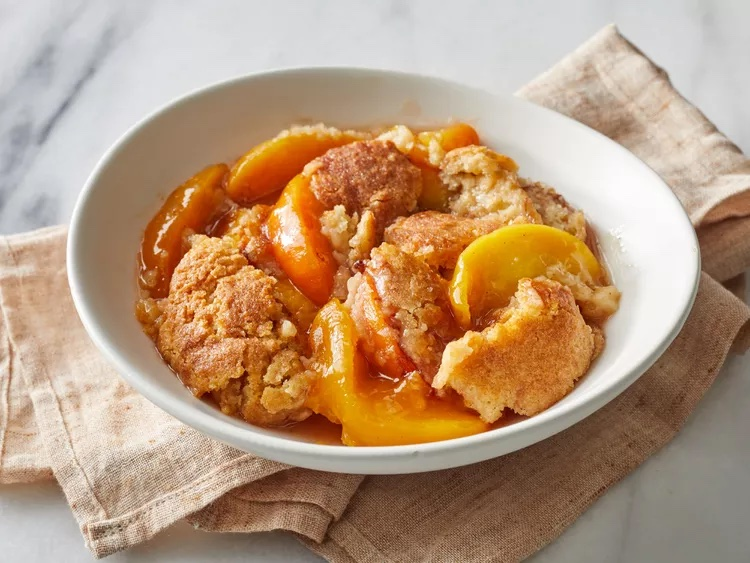

Peach Cobbler

Description
A warm mixture of sweetened, juicy peaches is topped with a biscuit-like
dough and sprinkled in cinnamon sugar. Although it's made from scratch
with fresh peaches, this easy peach cobbler is incredibly simple and
comes together in just one hour.
Ingredients
- 8 fresh peaches - peeled, pitted and sliced into thin wedges
- ¼ cup white sugar
- ¼ cup brown sugar
- ¼ teaspoon ground cinnamon
- ⅛ teaspoon ground nutmeg/li>
- 1 teaspoon fresh lemon juice
- 2 teaspoons cornstarch
- 1 cup all-purpose flour
- ¼ cup white sugar
- ¼ cup brown sugar
- 1 teaspoon baking powder
- ½ teaspoon salt
- 6 tablespoons unsalted butter, chilled and cut into small pieces
- ¼ cup boiling water
- 3 tablespoons white sugar
- 1 teaspoon ground cinnamon
Instructions
- Preheat the oven to 425 degrees F (220 degrees C).
- Combine peaches, 1/4 cup white sugar, 1/4 cup brown sugar, 1/4 teaspoon cinnamon,
nutmeg, lemon juice, and cornstarch in a large bowl; toss to coat evenly,
and pour into a 2-quart baking dish. Bake in preheated oven for 10 minutes.
- Meanwhile, combine flour, 1/4 cup white sugar, 1/4 cup brown sugar, baking powder,
and salt in a large bowl. Blend in butter with your fingertips or a pastry blender
until mixture resembles coarse meal. Stir in water until just combined.
- Remove peaches from oven, and drop spoonfuls of topping over them.
- Mix 3 tablespoons white sugar and 1 teaspoon cinnamon together in a small bowl;
sprinkle over entire cobbler.
- Bake in the preheated oven until topping is golden, about 30 minutes.